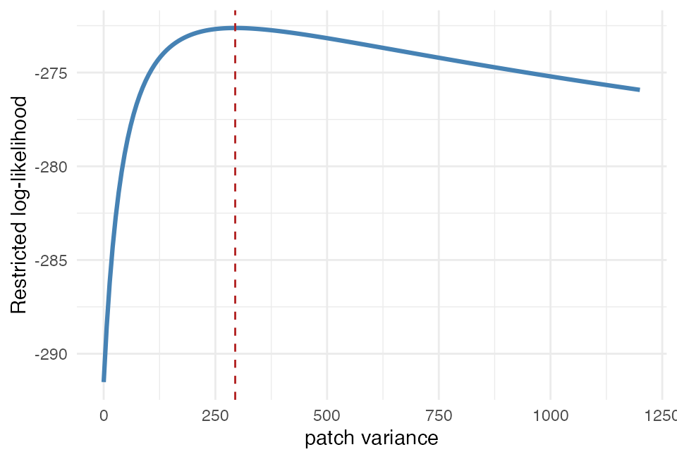
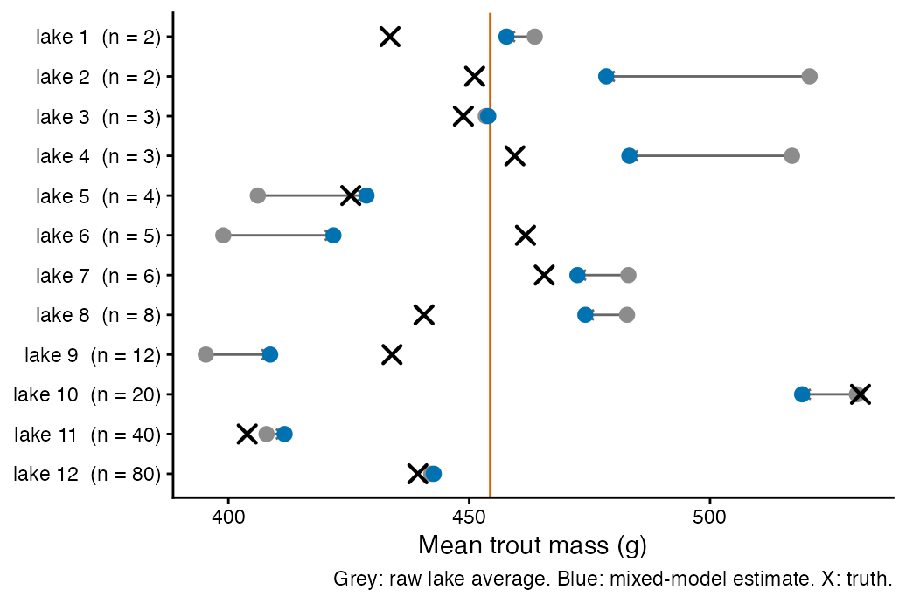
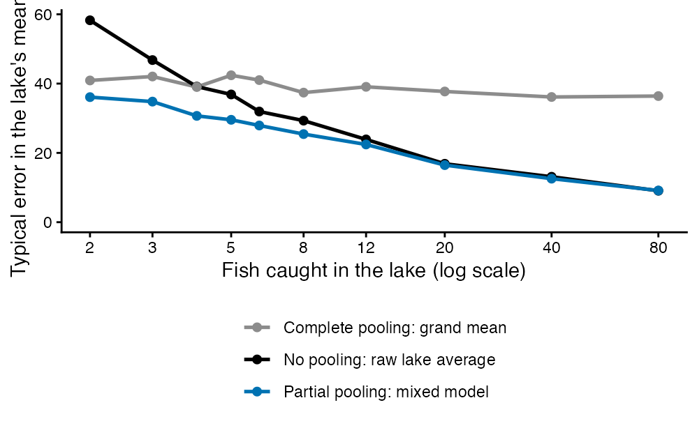
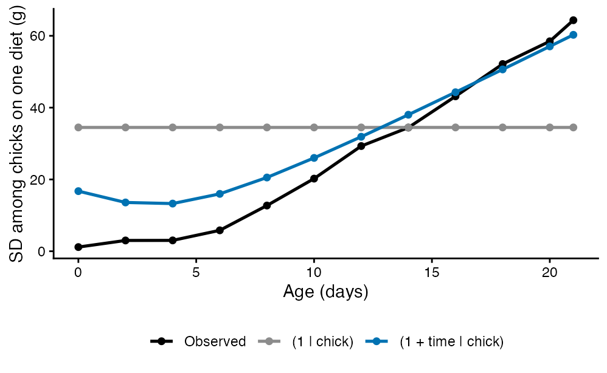

library(tidyverse)
library(janitor)
library(car)
library(lme4)
library(lmerTest)
library(pbkrtest) # parametric bootstrap
options(contrasts = c("contr.sum", "contr.poly"))
u_df <- read_csv("data/andrew.csv") %>%
clean_names() %>%
# the file's dens_33 / dens_66 labels are reversed relative to the book
mutate(treat = case_when(
treat == "removal" ~ "0%",
treat == "dens_66" ~ "33%",
treat == "dens_33" ~ "66%",
treat == "control" ~ "100%"),
treat = factor(treat, levels = c("0%", "33%", "66%", "100%")),
patch = as_factor(patch))
u_lmer_model <- lmer(algae ~ treat + (1 | patch), data = u_df,
control = lmerControl(calc.derivs = FALSE))Mixed Models Under the Hood
Where the variance components and p-values come from
The optional deeper material from the linear mixed models lecture: the nested sums-of-squares table, estimating the patch variance by hand from mean squares, REML written out and maximised, why REML and ML differ, the four routes to a p-value, partial pooling and shrinkage with known truth, and what a random slope does to the spread through time.
📥 Download the R script 📊 Download the data
NoteOptional reading
You do not need this page to fit or interpret a mixed model. The lecture and the Linear Mixed Models vignette cover that. This page is for anyone who wants to see where the numbers come from. It uses the same urchin data and the same model, lmer(algae ~ treat + (1 | patch)).
Two names are used throughout, the same ones R prints:
| Name | What it measures | Urchin value |
|---|---|---|
| patch variance, σ²patch | how far patches sit from their own treatment mean (among-patch) | 294.3 |
| residual variance, σ²resid | how far quadrats sit from their own patch mean (within-patch) | 298.6 |
Step 1: Load packages and data
Step 2: The old route, part 1: a nested sums-of-squares table
The traditional nested ANOVA splits the total variation into three pieces: treatment, patches within treatment, and quadrats within patches.
a_tab <- summary(aov(algae ~ treat + treat:patch, data = u_df))[[1]]
round(a_tab[, c("Df", "Sum Sq", "Mean Sq")], 1) Df Sum Sq Mean Sq
treat 3 14429 4809.7
treat:patch 12 21242 1770.2
Residuals 64 19110 298.6On these data: SStotal 54 781 = treatment 14 429 + patch 21 242 + residual 19 110.
The treatment must be tested against the patch mean square (1770, on 12 df), not the residual mean square (298.6, on 64 df), because the treatment was applied to patches:
c(wrong_F = a_tab[1, "Mean Sq"] / a_tab[3, "Mean Sq"], # against quadrats
right_F = a_tab[1, "Mean Sq"] / a_tab[2, "Mean Sq"]) # against patches wrong_F right_F
16.107544 2.717102 The right F of 2.72 is what aov(algae ~ treat + Error(patch)) and lmer() both report.
Step 3: The old route, part 2: the patch variance by hand
Theory says what each mean square estimates on average (its expected mean square), where n = 5 quadrats per patch:
\[E[MS_{resid}] = \sigma^2_{resid} \qquad E[MS_{patch}] = \sigma^2_{resid} + n\,\sigma^2_{patch}\]
Set the observed equal to the expected and solve. This is the method of moments: arithmetic on a table.
MS_patch <- a_tab[2, "Mean Sq"]
MS_resid <- a_tab[3, "Mean Sq"]
n <- 5 # quadrats per patch
c(residual = MS_resid,
patch = (MS_patch - MS_resid) / n)residual patch
298.6000 294.3125 294.3, the same as VarCorr(u_lmer_model).
Step 4: The new route: REML, written out
lmer() never builds that table. It writes down the variance of the whole response vector:
\[\mathbf{V} = \sigma^2_{patch}\,\mathbf{ZZ}^\top + \sigma^2_{resid}\,\mathbf{I}\]
\(\mathbf{ZZ}^\top\) is 1 for any two quadrats in the same patch and 0 otherwise. So V says, directly, that two quadrats in one patch are correlated. Then it asks: which pair of variances makes the observed data most likely?
Here is the restricted (REML) log-likelihood in eight lines, with no lme4:
y <- u_df$algae
X <- model.matrix(~ treat, u_df) # fixed effects
Z <- model.matrix(~ 0 + patch, u_df) # which patch each quadrat is in
ZZt <- Z %*% t(Z)
reml_ll <- function(var_patch, var_resid) {
V <- var_patch * ZZt + var_resid * diag(nrow(X))
Vi <- solve(V)
A <- t(X) %*% Vi %*% X
b <- solve(A, t(X) %*% Vi %*% y) # fixed effects, given V
r <- y - X %*% b
-0.5 * as.numeric(determinant(V, log = TRUE)$modulus +
determinant(A, log = TRUE)$modulus +
t(r) %*% Vi %*% r)
}The three pieces pull against each other:
- \(\log|\mathbf{V}|\) penalises big variances, because a bigger variance spreads probability thinner.
- \(\mathbf{r}^\top\mathbf{V}^{-1}\mathbf{r}\) penalises big leftover residuals, which pushes the variances up.
- \(\log|\mathbf{X}^\top\mathbf{V}^{-1}\mathbf{X}|\) is the restricted part: the correction for having estimated the fixed effects (see Step 7).
Step 5: The surface the optimiser climbs
Hold the residual variance at 298.6 and trace the likelihood as the patch variance changes:
prof <- tibble(v = seq(0, 1200, length.out = 180)) %>%
rowwise() %>%
mutate(ll = reml_ll(v, 298.6)) %>%
ungroup()
ggplot(prof, aes(v, ll)) +
geom_line(linewidth = 1.1, colour = "steelblue") +
geom_vline(xintercept = 294.31, linetype = "dashed", colour = "firebrick") +
labs(x = "patch variance", y = "Restricted log-likelihood") +
theme_minimal()
The peak is at 294.3. But look how flat it is: everything from about 150 to 600 is within one log-likelihood unit. A variance estimated from 16 patches is uncertain. The Kenward-Roger F-test accounts for that uncertainty, and the Wald chi-square ignores it, which is why the two disagree (Step 8).
Step 6: Three routes, one number
moments <- (MS_patch - MS_resid) / n
fit <- optim(c(200, 300),
\(p) -reml_ll(p[1], p[2]),
method = "L-BFGS-B",
lower = c(0, 1e-6))
lmer_vc <- as.data.frame(VarCorr(u_lmer_model))$vcov[1]
round(c(moments = moments, likelihood = fit$par[1], lmer = lmer_vc), 3) moments likelihood lmer
294.313 294.312 294.313 Algebra on a table and a numerical search agree. On a balanced design the REML answer has a closed form, and that closed form is the moment estimator, as long as it comes out positive.
Where the two routes part company
1. The moment estimator can go negative. If MSpatch < MSresid by chance, the subtraction is below zero, which is impossible for a variance. REML stops at 0 instead and warns “boundary (singular) fit”.
set.seed(11)
fake <- expand_grid(treat = factor(1:4), p_in = 1:4, quad = 1:5) %>%
mutate(patch = factor(paste0(treat, "_", p_in)),
y = rnorm(n(), 10, 5)) # patches truly identical
ft <- summary(aov(y ~ treat + treat:patch, fake))[[1]]
fm <- lmer(y ~ treat + (1 | patch), fake,
control = lmerControl(calc.derivs = FALSE))boundary (singular) fit: see help('isSingular')round(c(moments = (ft[2, "Mean Sq"] - ft[3, "Mean Sq"]) / 5,
REML = as.data.frame(VarCorr(fm))$vcov[1]), 3)moments REML
-1.634 0.000 2. Unbalanced data has no single n to divide by. Cut four patches to one quadrat each:
thin <- u_df %>% filter(!(patch %in% c(2, 6, 10, 14) & quad > 1))
tt <- summary(aov(algae ~ treat + treat:patch, thin))[[1]]
tm <- lmer(algae ~ treat + (1 | patch), thin,
control = lmerControl(calc.derivs = FALSE))
MSp <- tt[2, "Mean Sq"]; MSr <- tt[3, "Mean Sq"]
round(c(`moments, n = 5` = (MSp - MSr) / 5,
`moments, n0 = 3.95` = (MSp - MSr) / 3.95,
REML = as.data.frame(VarCorr(tm))$vcov[1]), 1) moments, n = 5 moments, n0 = 3.95 REML
198.2 250.9 256.7 The moment method needs you to choose an effective n. REML never asks, because the likelihood already knows how many quadrats each patch has. This is why mixed models replaced Error().
Step 7: Why REML and not plain ML
ml_fit <- lmer(algae ~ treat + (1 | patch), data = u_df, REML = FALSE,
control = lmerControl(calc.derivs = FALSE))
round(c(REML = as.data.frame(VarCorr(u_lmer_model))$vcov[1],
ML = as.data.frame(VarCorr(ml_fit))$vcov[1]), 1) REML ML
294.3 205.8 Plain maximum likelihood gets 205.8, about 30% low. It’s the same bias as dividing a variance by n instead of n − 1: ML estimates the four treatment means and then behaves as if they were known. REML’s extra term (Step 4) is the n − 1 correction, generalised.
Use REML (the default) for variance components. Switch to ML only to compare models with different fixed effects.
Step 8: Where p-values come from
lme4 alone prints no p-values. Its author left them out on purpose: in a mixed model the F denominator is built from several estimated variances, so the ratio is only approximately F and there is no single correct df. lmerTest fits the identical model and approximates the df (Satterthwaite by default; car::Anova(test.statistic = "F") uses Kenward-Roger).
round(coef(summary(lme4::lmer(algae ~ treat + (1 | patch), data = u_df))), 2) Estimate Std. Error t value
(Intercept) 20.26 4.70 4.31
treat1 18.94 8.15 2.32
treat2 -1.26 8.15 -0.15
treat3 1.29 8.15 0.16Ben Bolker, who maintains lme4, ranks the ways of getting a p-value from crudest to most careful:
pv_m1 <- lme4::lmer(algae ~ treat + (1 | patch), data = u_df, REML = FALSE)
pv_m0 <- lme4::lmer(algae ~ 1 + (1 | patch), data = u_df, REML = FALSE)
pv_pb <- PBmodcomp(pv_m1, pv_m0, nsim = 1000, seed = 2026)
data.frame(
method = c("Wald chi-square", "Likelihood-ratio test",
"F, Kenward-Roger df", "Parametric bootstrap"),
assumes = c("variances known exactly", "many groups",
"df approximated", "nothing about df"),
p = round(c(
Anova(u_lmer_model, type = 3, test.statistic = "Chisq")["treat", "Pr(>Chisq)"],
pv_pb$test["LRT", "p.value"],
Anova(u_lmer_model, type = 3, test.statistic = "F")["treat", "Pr(>F)"],
pv_pb$test["PBtest", "p.value"]), 3)) method assumes p
1 Wald chi-square variances known exactly 0.043
2 Likelihood-ratio test many groups 0.040
3 F, Kenward-Roger df df approximated 0.091
4 Parametric bootstrap nothing about df 0.087The two careful methods (Kenward-Roger F and the bootstrap, which assumes nothing about df) agree. The two shortcuts both say “significant”, for the same reason: they behave as if 16 patches were a large sample. For ecological data, where groups are nearly always few, use the F-test. Reach for PBmodcomp() when a result sits near 0.05 and matters.
Does contr.sum matter?
| Output | Changes with the contrast setting? |
|---|---|
fitted values, variance components, emmeans(), anova() from lmerTest |
no |
car::Anova(type = 3) when the model has an interaction |
yes |
what each Fixed effects row in summary() means |
yes |
Keep the options(contrasts = ...) line at the top of every script, and read means from emmeans(), not from summary().
Step 9: Partial pooling and shrinkage
A mixed model doesn’t just fix the p-value. It also changes each group’s estimate. Each patch is pulled part of the way toward its treatment mean, by a weight that comes from the two variances:
\[\text{weight} = \frac{\sigma^2_{patch}}{\sigma^2_{patch} + \sigma^2_{resid} / n}\]
vc <- as.data.frame(VarCorr(u_lmer_model))
var_patch <- vc$vcov[vc$grp == "patch"]
var_resid <- vc$vcov[vc$grp == "Residual"]
w <- var_patch / (var_patch + var_resid / 5)
round(w, 2)[1] 0.83u_df %>%
group_by(treat, patch) %>%
summarise(raw = mean(algae), .groups = "drop") %>%
group_by(treat) %>%
mutate(trt_mean = mean(raw),
model = round(trt_mean + w * (raw - trt_mean), 1)) %>%
filter(treat == "0%")# A tibble: 4 × 5
# Groups: treat [1]
treat patch raw trt_mean model
<fct> <fct> <dbl> <dbl> <dbl>
1 0% 13 34.2 39.2 35
2 0% 14 62 39.2 58.2
3 0% 15 2.2 39.2 8.4
4 0% 16 58.4 39.2 55.2Weight 1 means “believe the patch’s own mean”. Weight 0 means “ignore it, use the treatment mean”. Nobody picks the weight; it follows from the two variances.
Shrinkage with the truth visible
To see whether shrinkage helps, we need data where the truth is known. Twelve made-up lakes, each with a true mean trout mass; we net 2 fish in some and 80 in others:
set.seed(2026)
sh_n <- c(2, 2, 3, 3, 4, 5, 6, 8, 12, 20, 40, 80) # fish netted per lake
sh_survey <- function() {
truth <- rnorm(12, 450, 40) # lakes differ: SD 40 g
d <- tibble(lake = factor(rep(1:12, sh_n)),
true_mean = rep(truth, sh_n),
mass = true_mean + rnorm(sum(sh_n), 0, 80)) # fish: SD 80 g
m <- suppressMessages(suppressWarnings(
lmer(mass ~ 1 + (1 | lake), data = d)))
d %>%
group_by(lake) %>%
summarise(n = n(), true_mean = first(true_mean),
raw = mean(mass), .groups = "drop") %>%
mutate(model = coef(m)$lake[as.character(lake), 1],
grand = fixef(m)[1],
sd_lake = sqrt(as.numeric(VarCorr(m)$lake)))
}
# draw surveys until one estimates the lake SD close to its true 40 g
repeat {
sh_one <- sh_survey()
if (abs(sh_one$sd_lake[1] - 40) < 5) break
}
sh_one %>%
mutate(lab = fct_rev(fct_inorder(paste0("lake ", lake, " (n = ", n, ")")))) %>%
ggplot(aes(y = lab)) +
geom_vline(aes(xintercept = grand), colour = "#D55E00") +
geom_segment(aes(x = raw, xend = model, yend = lab), colour = "grey40",
arrow = arrow(length = unit(0.15, "cm"))) +
geom_point(aes(x = raw), colour = "grey55", size = 2.6) +
geom_point(aes(x = model), colour = "#0072B2", size = 2.6) +
geom_point(aes(x = true_mean), shape = 4, size = 2.8, stroke = 1.1) +
labs(x = "Mean trout mass (g)", y = NULL,
caption = "Grey: raw lake average. Blue: mixed-model estimate. X: truth.") +
theme_classic()
Lakes with few fish get pulled hardest toward the all-lakes mean (orange). Repeat the survey 500 times and measure the typical error of each method:
sh_many <- map_dfr(1:500, \(i) sh_survey())
sh_many %>%
group_by(n) %>%
summarise(`No pooling: raw lake average` = sqrt(mean((raw - true_mean)^2)),
`Complete pooling: grand mean` = sqrt(mean((grand - true_mean)^2)),
`Partial pooling: mixed model` = sqrt(mean((model - true_mean)^2)),
.groups = "drop") %>%
pivot_longer(-n) %>%
ggplot(aes(n, value, colour = name)) +
geom_line(linewidth = 0.9) +
geom_point(size = 1.8) +
scale_x_log10(breaks = c(2, 3, 5, 8, 12, 20, 40, 80)) +
scale_colour_manual(values = c("grey55", "black", "#0072B2"), name = NULL) +
expand_limits(y = 0) +
labs(x = "Fish caught in the lake (log scale)",
y = "Typical error in the lake's mean (g)") +
theme_classic() +
theme(legend.position = "bottom", legend.direction = "vertical")
The mixed model is never worse than either alternative. With 2 fish it beats the raw average by a lot; with 80 fish the two are the same. This is “borrowing strength”: a lake with 2 fish is estimated partly from what the other 11 lakes say about how much lakes differ.
Step 10: What a random slope does to the spread
From the chick example in lecture. Chicks hatch nearly identical and grow apart. Each random-effects formula makes a claim about how the spread among chicks changes with age:
ck_df <- as_tibble(ChickWeight) %>%
clean_names() %>%
mutate(chick = factor(chick, ordered = FALSE))
ck_ri <- lmer(weight ~ time * diet + (1 | chick), data = ck_df)
ck_rs <- lmer(weight ~ time * diet + (1 + time | chick), data = ck_df)
ck_obs <- ck_df %>%
group_by(diet, time) %>%
summarise(v = var(weight), .groups = "drop") %>%
group_by(time) %>%
summarise(sd = sqrt(mean(v)), .groups = "drop")
ck_G <- as.matrix(Matrix::bdiag(VarCorr(ck_rs))) # intercept, slope
ck_s2 <- sigma(ck_rs)^2
ck_obs %>%
transmute(time,
Observed = sd,
`(1 | chick)` = sqrt(as.numeric(VarCorr(ck_ri)$chick) + sigma(ck_ri)^2),
`(1 + time | chick)` = sqrt(ck_G[1, 1] + 2 * time * ck_G[1, 2] +
time^2 * ck_G[2, 2] + ck_s2)) %>%
pivot_longer(-time) %>%
mutate(name = fct_inorder(name)) %>%
ggplot(aes(time, value, colour = name)) +
geom_line(linewidth = 0.9) +
geom_point(size = 1.6) +
scale_colour_manual(values = c("black", "grey55", "#0072B2"), name = NULL) +
labs(x = "Age (days)", y = "SD among chicks on one diet (g)") +
theme_classic() +
theme(legend.position = "bottom")
(1 | chick)says chicks differ by a constant amount at every age: a flat line.(1 + time | chick)says chicks differ in growth rate, so the spread fans out, close to what was observed.
\[\sigma^2_{age} = \sigma^2_{int} + 2 \cdot age \cdot cov + age^2 \cdot \sigma^2_{slope} + \sigma^2_{resid}\]
# put R's default contrasts back
options(contrasts = c("contr.treatment", "contr.poly"))For more random-slope spellings, and correlation through time, see Mixed Model Structures.